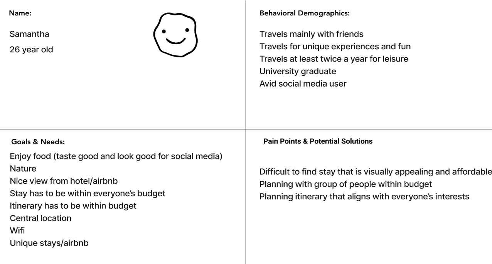
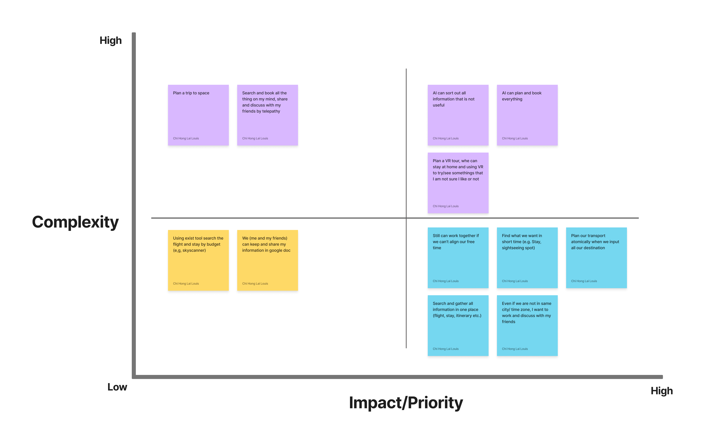

Triplan is a trip planner app that organized all information and users and their friends can discuss the itinerary when they are planning their trip.
The problem
People have limited time to plan a group trip, and they experience inconvenience in planning procedures.
The Solution
Triplan is a trip planner app that organized all information and users and their friends can discuss the itinerary when they are planning their trip.
UX design:
UI design:
Tools
Proto-persona
In the research and ideation stage, we are working as pairs, the whole case study start from this prototype persona, Samantha. We conducted a interview base on this prototype persona, and discover some findings to help us create our own design prototype in the design stage.
User interview
I conduct 5 interviews to discover their travel habit, and what organizational and collaborative challenges groups of travelers face when planning a trip.
Base on the interview, I discovered our interviewee will work collaboratively, but it also is the most difficult part to agree the itinerary.
“I would say the most difficult part (of planning a group trip) is to agree on
the itinerary like, what are the places that everybody would like to go?......”
“So if somebody is very insisting of going somewhere or not going somewhere,
then we'll just accommodate that. Make everybody happy. You can't lose a friend
going to a trip.”
- Jeffery
“……someone takes the lead and coming up with a preliminary plan and everyone
chipping in. Being like, this is wonderful, but I've heard instead of X, A B and
C would be better, and everyone agreeing and then finalizing the itinerary in
that way.”
- Farida
Empathy map

User persona

Brainstorm
To generate ideas for the apps, I use the 'I Like, I Wish, What If' method to create a Feature Prioritization Matrix. The features with high impact and low complexity would be the first priority to be dealt with.
User journey map

User flow
I split the user flow into three parts, Onboarding & Login/Signup, Book & Search, and Add to Calendar. I keep the flow simply and stright forward, reduce the difficulty of learning to use the app, and the time they spend on finish the task.
Wireframing
Base on the user flow, I start to wirefraing the app, and make it clickable for usability test.
Usability test
I conduct 5 usability test to identify the pain points of the flow from the user downloading the app, to they success book and plan a trip.
Usability test tasks
2x2 priority matrix

Iterated iOS Prototype
Base on the data from usability test, I iterated my prototype and updated it by using iOS Design Guidelines.
Usability test
I conduct 2 usability test again to find out did I reslove the pain points of the previous prototype.
Usability test tasks
Usability test result
Here is the data from the usability test. I find that most of the painpoint was solved.

Final Thoughts
At the beginning of the design process, I have a big challenge on narrowed my
objective. After the interview, I got a lot of data related to the project. It
was a hard time analyzing all the data and finding out the objective of this
case study.
I wish I can do better in the definition and ideation stage. It is good that
I can learn different methods and tools that help a lot in this stage, but I
didn’t have enough time to dig in more on it. Next time, I may need to spend
more time on the stage, to create a betterfoundation for the project.